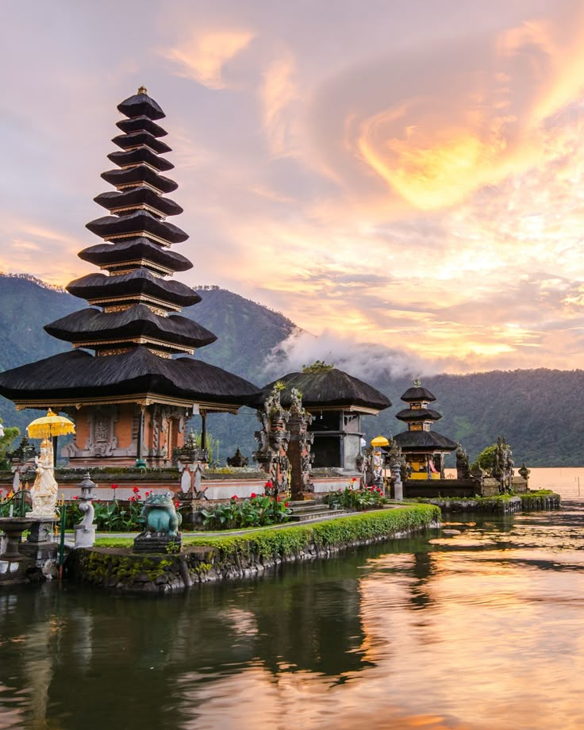
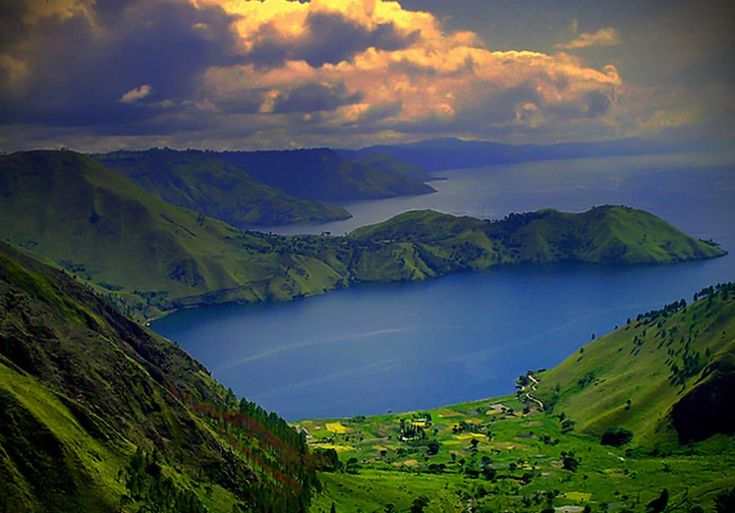
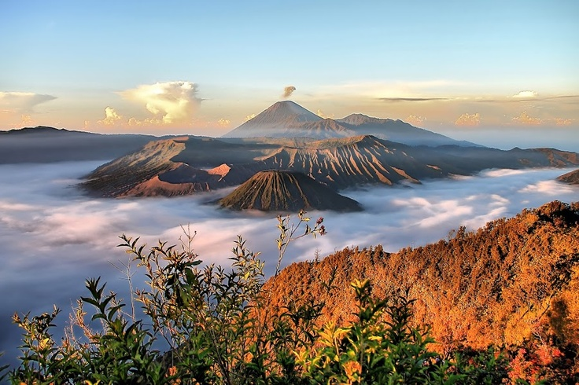

Bali
Pantai, pura, dan budaya yang menarik untuk dijelajahi.
Kenali keindahan alam dan budaya Nusantara
PESONA NUSANTARA
Indonesia memiliki pantai, pegunungan, dan budaya yang beragam. Jelajahi beberapa destinasi pilihan dan rencanakan liburanmu.
Jelajahi Destinasi
DESTINASI PILIHAN

Pantai, pura, dan budaya yang menarik untuk dijelajahi.

Pemandangan pegunungan dan matahari terbit yang terkenal.
Danau luas dengan panorama alam dan budaya Batak.
MEDIA WISATA
Saksikan keindahan perjalanan wisata Indonesia yang lainnya